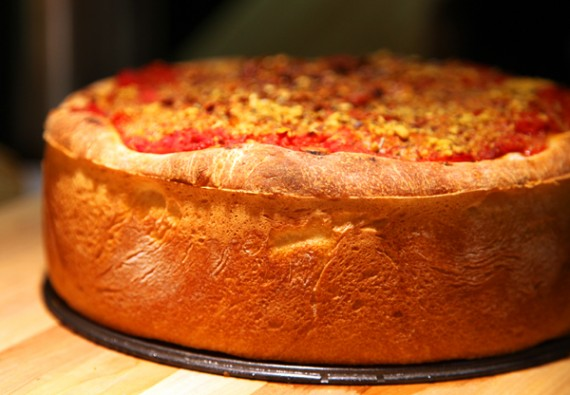

Cage Match New York vs. Chicago
Il classico New York Pizza la rotonda, sottile crosta di cose che la maggior parte delle persone negli Stati Uniti pensano come "pizza". E non mi danno nessuno Guff su questo. Vai avanti e pensare a una pizza.
New York's finest thin-crust pizza
Nove su dieci di voi ha pensato di qualcosa di rotondo e piu sottile sul lato rispetto al lato piu spesso, giusto? Anche la roba grande catena, con tutte le loro variazioni di stile crosta, direi che la loro la pizza di default e piu vicino al normale NY-style che, diciamo, piatto fondo o siciliano o cosa no.
Un vero New York-style pizza ha idealmente una crosta che e allo stesso tempo frizzante e gommoso. Puo essere condita con tutto quello che vuole, ma e meglio con solo uno o due guarnizioni applicate (in modo crosta rimane croccante).
Newyorkesi in genere si piega mentre si mangia. Chiamato anche a New York come una torta "normale" o un "regolare" fetta. La fetta di default regolare e una fetta "normale", cioe senza condimenti, solo formaggio.
 Chicago's deep-dish, cheesy goodness
Non so se ho bisogno di elaborare molto sul piatto fondo, dal momento che, come New York-style, sai gia di cosa si tratta. E non sto cercando di battere qui, ma e piu come una casseruola di, diciamo, focaccia. E 'cotta in una padella profonda, con un profondo, spessa crosta burrosa, e una salsa di pomodoro grosso. Un sacco di formaggio, un sacco di (e / o abbondanti quantita di condimenti).
La crosta e precotta in padella prima di condimenti sono aggiunti, di solito uno strato di mozzarella a fette, seguiti da carni e verdure, poi salsa, poi formaggio grattugiato.
A differenza di New York-style, si mangia con un coltello e forchetta. Per ulteriori informativa relativa alla sua origine, c'e questo 20 luglio 1997, storia dal Chicago Tribune.
Come napoletana e New York-style, deep dish ha viaggiato lontano dalla sua citta natale. Sebbene, con poche eccezioni degne di nota, buon piatto fondo e ancora difficile da trovare al di fuori Chicago.
{kind=link}